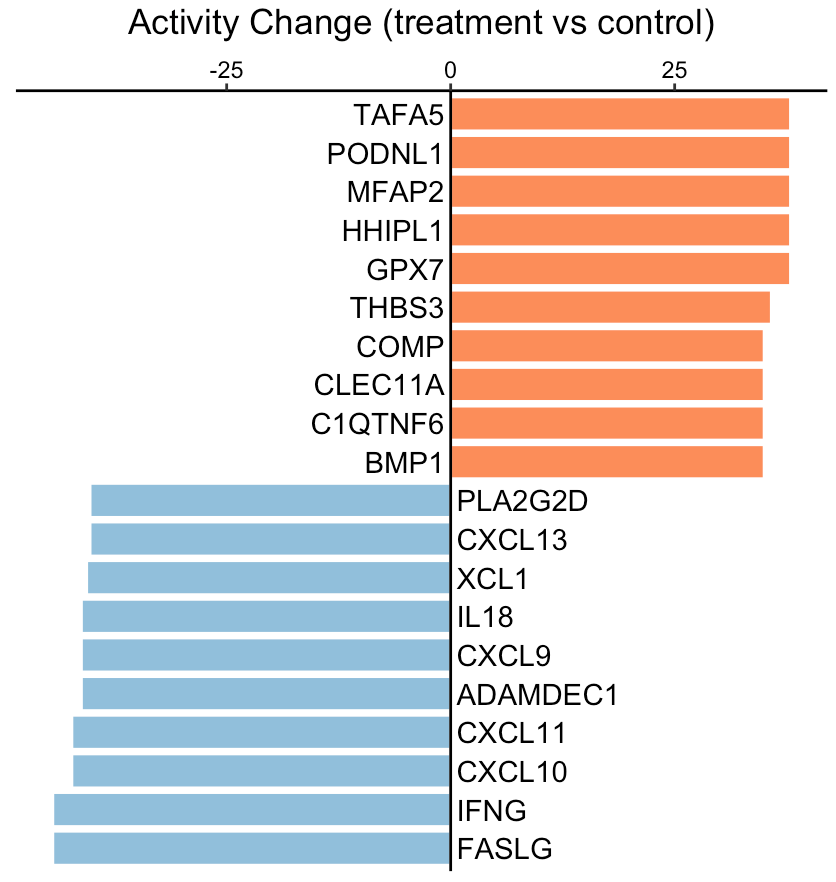

Secreted protein signaling activity change between two phenotypes
Source:vignettes/bulkChange.Rmd
bulkChange.RmdThis tutorial demonstrates how to infer the activity change of secreted proteins between two phenotypes, such as treatment vs control, tumor vs normal, or responder vs non-responder. The input expression values, from either RNA sequencing or MicroArray, should be transformed by log2(x+1). Of note, x could be FPKM, RPKM, or TPM for RNA-Seq data.
For this demonstration, we employ a clinical cohort of patients with discoid lupus erythematosus, who received a single dose of anti-IFNG antibody AMG 811. Using the SecAct framework, we will predict the activity change of secreted proteins between treatment and control groups.
Prepare expression data
This section shows how to read an expression matrix to the R environment and separate samples into the treatment and control groups.
library(SecAct)
# prepare expression matrix
dataPath <- file.path(system.file(package="SecAct"), "extdata/")
expr <- read.csv(paste0(dataPath,"GSE100093.IFNG.expr.gz"), sep="\t")
# read meta infomation
meta <- read.csv(paste0(dataPath,"GSE100093.IFNG.meta"), sep="\t")
# subset treatment and control groups
expr.treatment <- expr[, meta[,"Treatment"]=="Anti-IFNG"]
expr.control <- expr[, meta[,"Treatment"]=="Control"]Infer activity change
We input expr.treatment and expr.control
into SecAct.activity.inference to infer the activity change
of secreted proteins between treatment and control groups.
SecAct calculates the OVERALL activity change between two
phenotypes with default setting
is.singleSampleLevel = FALSE. You can also obtain the
activity change for each SINGLE sample in expr.treatment by
setting is.singleSampleLevel = TRUE. Of note, if your
samples are paired, just change the default setting
is.paired = FALSE to TRUE.
# infer activity change; ~2 mins
res <- SecAct.activity.inference(
inputProfile = expr.treatment,
inputProfile_control = expr.control,
is.singleSampleLevel = FALSE,
is.paired = FALSE
)
# res$zscore stores activity change
act.change <- res$zscore
# show activity change
head(act.change)A positive value means the secreted protein has high activity in the treatment group while a negative value means the secreted protein has high activity in the control group.
# show IFNG activity change
act.change["IFNG","Change"]We can see that IFNG activity was reduced as expected, consistent with the treatment group receiving anti-IFNG therapy.
Visualize activity change
User can visualize any secreted proteins of interest using
SecAct.bar.plot. Here, we select the top up- and
down-regulated secreted proteins (SPs) between treatment and control as
examples.
# select the top secreted proteins
n <- 10
up.SPs <- names(sort(act.change[,"Change"],decreasing=T))[1:n]
down.SPs <- names(sort(act.change[,"Change"]))[1:n]
SPs <- c(up.SPs, down.SPs)
# user can assign any secreted proteins to SPs
# generate a vector
fg.vec <- act.change[SPs,"Change"]
# visualize in bar plot
SecAct.bar.plot(fg.vec, title="Activity Change (treatment vs control)")
A positive value means the secreted protein has high activity in the treatment group while a negative value means the secreted protein has high activity in the control group.
Run a differential profile
If you already have a differential profile (or signature) instead of
the expression matrix from two phenotypes, you can directly run
SecAct.activity.inference with
is.differential = TRUE.
# compare two phenotypes to generate a differential profile
expr.diff <- matrix(
data = rowMeans(expr.treatment) - rowMeans(expr.control),
ncol = 1,
dimnames = list(
row_names = rownames(expr.treatment),
col_names = "Diff"
)
)
# Run a differential profile; ~2 mins
res <- SecAct.activity.inference(
inputProfile = expr.diff,
is.differential = TRUE
)
# res$zscore stores activity change
act.change <- res$zscore
# show activity change
head(act.change)